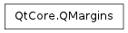

QMargins ¶

Note
This class was introduced in Qt 4.6
Synopsis ¶
Detailed Description ¶
The PySide.QtCore.QMargins class defines the four margins of a rectangle.
QMargin defines a set of four margins; left, top, right and bottom, that describe the size of the borders surrounding a rectangle.
The PySide.QtCore.QMargins.isNull() function returns true only if all margins are set to zero.
QMargin objects can be streamed as well as compared.
- class PySide.QtCore. QMargins ¶
- class PySide.QtCore. QMargins ( QMargins )
- class PySide.QtCore. QMargins ( left , top , right , bottom )
-
Parameters: - right – PySide.QtCore.int
- QMargins – PySide.QtCore.QMargins
- left – PySide.QtCore.int
- bottom – PySide.QtCore.int
- top – PySide.QtCore.int
Constructs a margins object with all margins set to 0.
See also
Constructs margins with the given left , top , right , bottom
- PySide.QtCore.QMargins. bottom ( ) ¶
-
Return type: PySide.QtCore.int Returns the bottom margin.
See also
- PySide.QtCore.QMargins. isNull ( ) ¶
-
Return type: PySide.QtCore.bool Returns true if all margins are is 0; otherwise returns false.
- PySide.QtCore.QMargins. left ( ) ¶
-
Return type: PySide.QtCore.int Returns the left margin.
See also
- PySide.QtCore.QMargins. __ne__ ( m2 ) ¶
-
Parameters: m2 – PySide.QtCore.QMargins Return type: PySide.QtCore.bool
- PySide.QtCore.QMargins. __eq__ ( m2 ) ¶
-
Parameters: m2 – PySide.QtCore.QMargins Return type: PySide.QtCore.bool
- PySide.QtCore.QMargins. right ( ) ¶
-
Return type: PySide.QtCore.int Returns the right margin.
See also
- PySide.QtCore.QMargins. setBottom ( bottom ) ¶
-
Parameters: bottom – PySide.QtCore.int Sets the bottom margin to bottom .
See also
- PySide.QtCore.QMargins. setLeft ( left ) ¶
-
Parameters: left – PySide.QtCore.int Sets the left margin to left .
See also
- PySide.QtCore.QMargins. setRight ( right ) ¶
-
Parameters: right – PySide.QtCore.int Sets the right margin to right .
See also
- PySide.QtCore.QMargins. setTop ( top ) ¶
-
Parameters: top – PySide.QtCore.int Sets the Top margin to Top .
See also
- PySide.QtCore.QMargins. top ( ) ¶
-
Return type: PySide.QtCore.int Returns the top margin.
See also